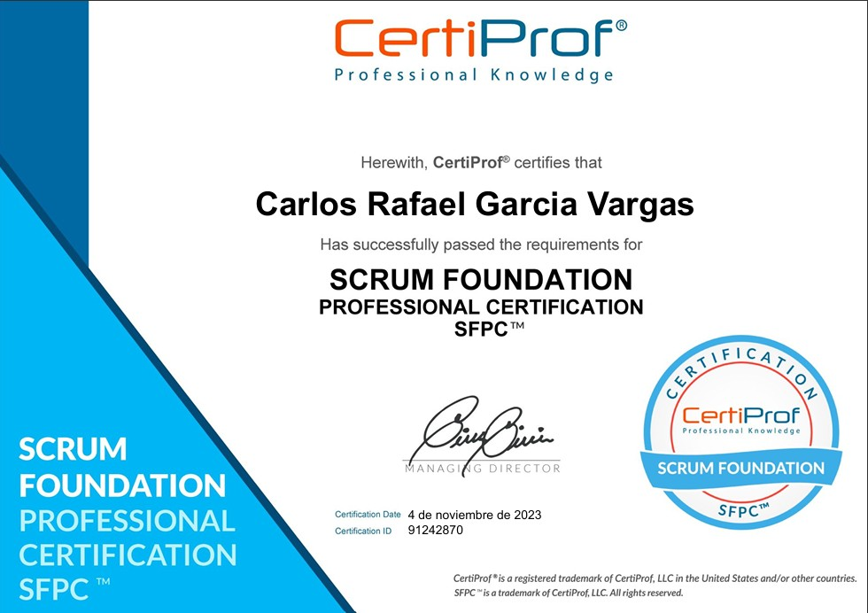
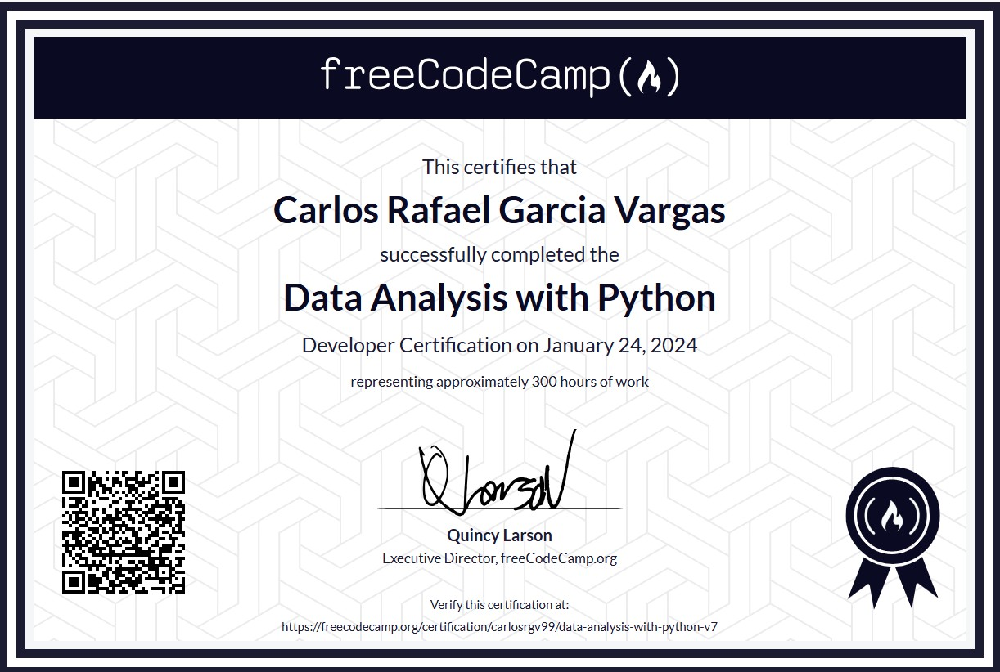
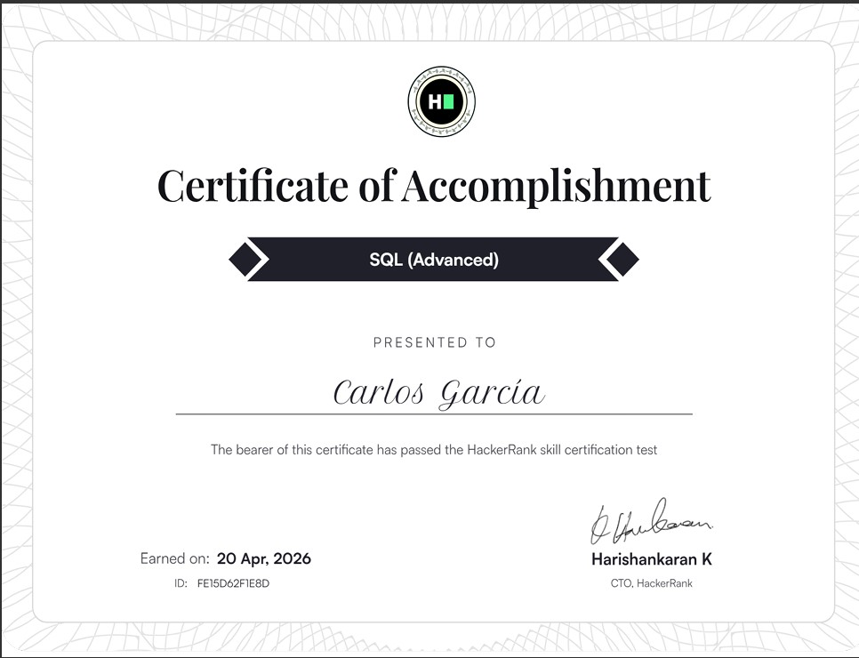
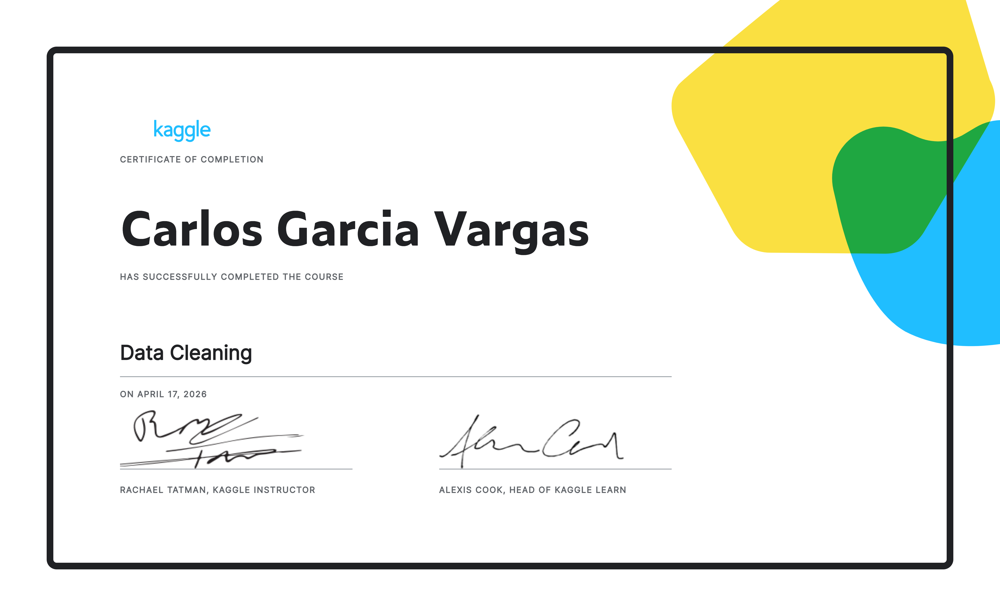
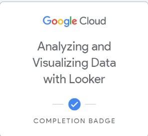
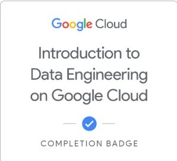
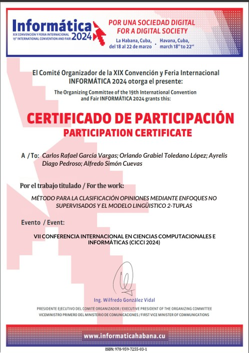

Sobre Mí
Perfil Profesional
Apasionado por la programación con 7 años de experiencia en el sector. Me caracterizo por mi responsabilidad y un deseo constante de aprendizaje continuo.
Áreas de Contribución
- Análisis y Ciencia de Datos: Transformación de datos en insights para la toma de decisiones.
- IA y Machine Learning: Implementación de soluciones innovadoras en NLP y procesamiento de datos.
Premios y Certificaciones
Pasa el cursor sobre los certificados para obtener más detalles. Haz clic en la imagen para abrir el certificado.

Scrum Foundation Professional Certification (SFPC™)
11 de noviembre de 2023
Validando conocimientos en metodologías ágiles.

Data Analysis with Python
24 de enero de 2024
Otorgado por FreeCodeCamp. Pruebas superadas en análisis de datos con ecosistema Python.

Advanced SQL (HackerRank)
2024
Especialista en consultas complejas y automatización de procesos.

Data Cleaning with Python (Kaggle)
2026
Acreditación en saneamiento y análisis visual de información.

Analyzing and Visualizing Data with Looker (Google Cloud)
2026
Especialización en dashboards interactivos para Business Intelligence.

Google Cloud | Introduction to Data Engineering
2026
Competencias adquiridas: Pipeline de datos, almacenamiento escalable (BigQuery/Cloud Storage) y fundamentos de analítica en la nube.

Evento Informática
marzo 2024
Exposición oral del paper "Sistema de clasificación de opiniones mediante modelos lingüísticos 2-tuplas y técnicas no supervisadas" en la sesión de Procesamiento de Lenguaje Natural (NLP).
Habilidades Técnicas y Blandas
Lenguajes y Frameworks
Datos e IA
Herramientas
Habilidades Blandas e Idiomas
Trayectoria
Experiencia Laboral
Centro de Informatización Gobierno Empresa (CIGE)
Proyecto SIPAC
Desarrollador implementando mejoras y nuevas funcionalidades.
Datos Académicos
Universidad de Ciencias Informáticas (UCI)
Dedicación total a la programación y desarrollo de software, participando en múltiples proyectos y jornadas científicas desde el primer año de la carrera.
Proyectos Destacados
SIPAC
2024 - 2025Software para la planificación por objetivos basado en el modelo cubano.
Biblioteca de Visión Artificial
2024Sistema en Python que utiliza modelos YOLO para detectar y extraer datos de facturas en PDF a formato JSON.
Chatbot Climático
2024Desarrollado con LangChain y la API de OpenWeatherMap para ofrecer datos climáticos actuales e históricos (1969-2023).
Two Tuples
2023Biblioteca de Python para análisis de sentimientos en reseñas de TripAdvisor mediante lógica difusa e IA.
Proyectos FreeCodeCamp
2023Análisis demográfico del censo de 1994, visualización de datos médicos cardiovasculares y estudio sobre el aumento del nivel del mar.